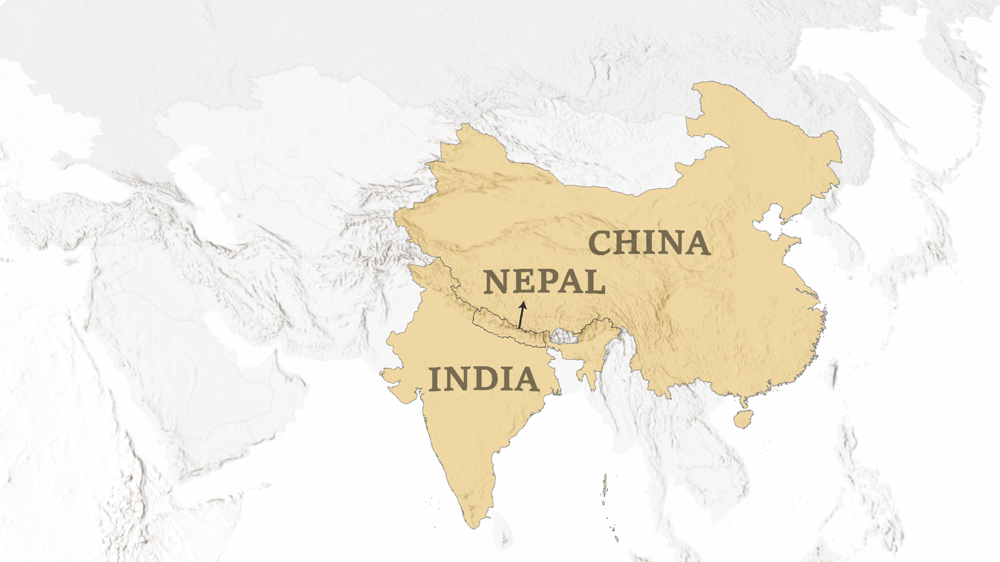
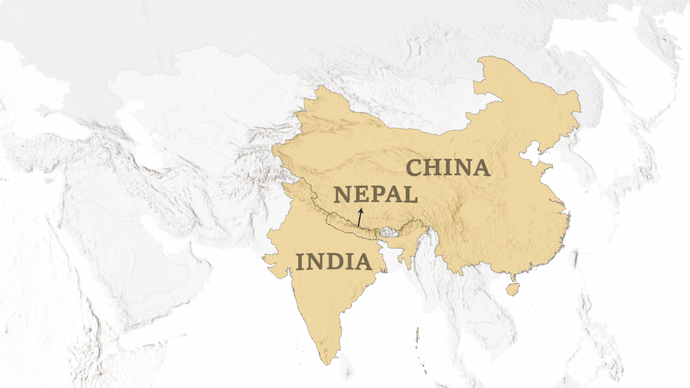

Glaciers are large, thick masses of ice that form on land when fallen snow gets compressed into ice over many centuries.
They move slowly downward from the pull of gravity.
About 2 percent of all the water on Earth is frozen in glaciers.
Most glaciers today are remnants of the massive ice sheets that covered Earth during the Ice Age which ended more than 10,000 years ago.

 
